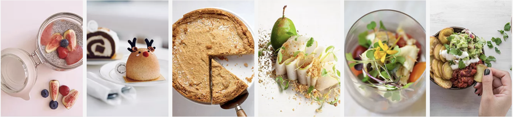
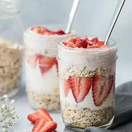

Food El Blog

Hakkımızda
Yaygınlaşmış küresel gıda anlayışına göre hamburger; belirli fast food
zincirlerinin yapım süreçleri ve kullandıkları malzemeler nedeniyle
“sağlıksızdır ve kilo aldırır” gibi negatif bir imaja sahip. Bu nedenle
son 10 yılı domine eden sağlıklı yaşam trendleri dışında bırakılmıştır.
“Hamburgersiz de yaşanır “, iddialıyız. Fool El Blog, bugüne kadar
yediğiniz tüm burgerleri size unutturacak kadar eşsiz yaratıldı.

Yemekler
Bir fırında mantar soslu antrikot Türk mutfağının en özel ve en
gösterişli yemeklerinden biri olarak kabul edilir. Bu yemek için dana
antrikot özel baharatlarla fırına verilir ve ağızda dağılacak kadar
yumuşayarak benzersiz bir deneyim için hazır hale gelir. Yanında sebze
sote, mantarlı özel sos ile bu harika şölen tamamlanır.

Aperatifler
Aperatif Anadolu lezzetlerinden Avrupa’ya varana kadar bir yemek
skalasını sizlerle paylaşmak için yola çıktık. İnternet gibi güçlü bir
bağ ile mutfaklarınıza misafir olmak niyetindeyiz. E hadi o zaman,
müsaitseniz kahvaltıya, belki akşam yemeğine, bilemedin 5 çayına
sizdeyiz. Yine de en çok sizleri bize bekleriz. Çünkü sadece bizim
mutfağımızın ocağı yanarsa biz sizin o maharetli ellerinizden çıkan
lezzetlerin tarifini nereden biliriz. İşte bu yüzden, hadi yine gelin;
bizim mutfağın kapısı yok, hep bekleriz.

Tatlılar
Tatlılar Taptaze tatlılarımız, fırınımız ustalarının özenle hazırladığı
pastacı kreması ile buluştu. Her sofraya yakışan alametifarikalarımız
tatlılarımız ile kendinizi ödüllendirin.
İletişim yemek@foodelblog.com 216-550-5905 Bağdat Cd. No:302/1 Kadıköy,
İstanbul, 34728
Food El Blog Ana Sayfa Aperatifler Vegan Yemekler Tatlılar İçecekler
@Copyright Food El Blog 2022